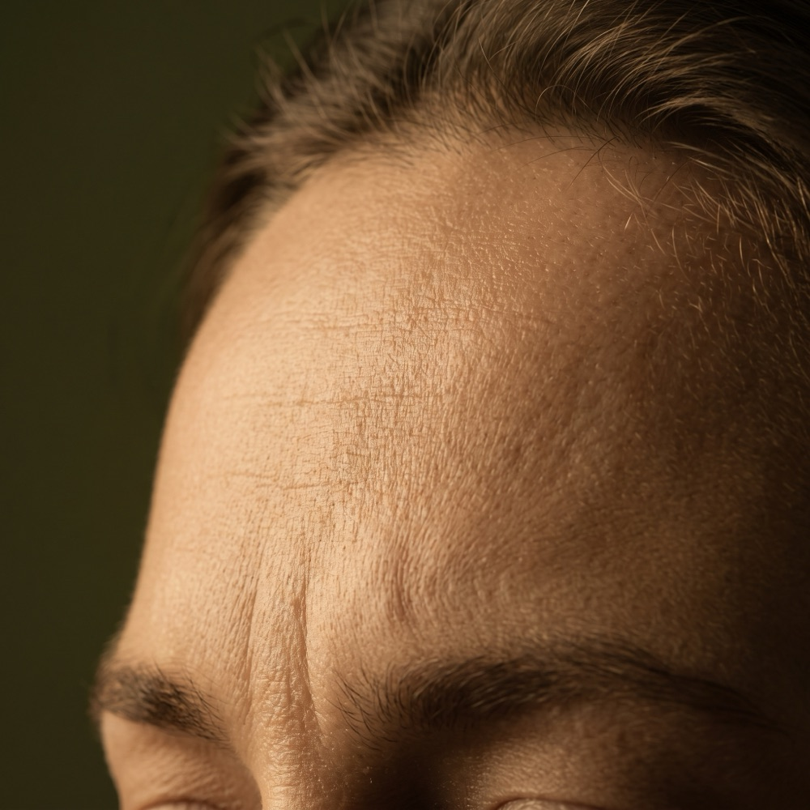

Mezoterapia mikroigłowa w Płocku – frakcyjne mikronakłuwanie skóry
Wyjątkowo skuteczna, kontrolowana metoda frakcyjnego mikronakłuwania naskórka, stymulująca naturalne mechanizmy obronne i naprawcze skóry. Poprzez powstałe mikrokanaliki w głąb tkanki wtłaczane są zaawansowane koktajle substancji aktywnych o natychmiastowym działaniu komórkowym — na sterylnych, jednorazowych kartridżach.
Cena już od:
599
zł
Dostępne dla tego zabiegu na recepcji w salonie
Zabiegi Manualne
Mezoterapia mikroigłowa w Płocku – jak działa i dla kogo jest ten zabieg?
Mezoterapia mikroigłowa to wyjątkowo skuteczna, kontrolowana metoda frakcyjnego mikronakłuwania naskórka. Zabieg stymuluje naturalne mechanizmy obronne i naprawcze skóry, wyzwalając potężną produkcję nowego kolagenu i elastyny. Jednocześnie, poprzez powstałe mikrokanaliki, w głąb tkanki zostają wtłoczone zaawansowane koktajle substancji aktywnych o natychmiastowym działaniu komórkowym.
W INSTYTUTem.™ pracujemy wyłącznie na sterylnych, jednorazowych kartridżach, dbając o najwyższe bezpieczeństwo. Do wyboru masz dwa warianty koktajlu — intensywną terapię frakcyjną całej twarzy ze spersonalizowanym koktajlem witaminowym, lub zabieg z koktajlem peptydów relaksujących, który działa jak bezinwazyjny botoks.
FAQ
Najczęściej zadawane pytania
Czym różnią się dwa dostępne warianty zabiegu?
Wariant „Twarz" to intensywna terapia frakcyjna całej twarzy ze spersonalizowanym koktajlem witaminowym — głęboko ujędrnia, zagęszcza strukturę naskórka i przywraca zdrowy blask. Wariant „BTSES Mimetic" wykorzystuje koktajl z peptydami relaksującymi, który działa jak bezinwazyjny botoks — precyzyjnie rozluźnia napięcie mięśniowe i spłyca zmarszczki mimiczne wokół oczu i ust.
Jak przygotować się do zabiegu?
Na 14 dni przed zabiegiem odstaw retinoidy i kwasy, a na 48 godzin przed zabiegiem zrezygnuj z alkoholu, żeby zminimalizować ryzyko siniaków. Zalecane jest też unikanie leków rozrzedzających krew przed zabiegiem.
Jak wygląda przebieg zabiegu?
Zabieg zaczynamy od szczegółowej konsultacji, na której wykluczamy przeciwwskazania i oceniamy stan skóry. Specjalne urządzenie ze sterylnym, jednorazowym kartridżem nakłuwa skórę na głębokość dobraną indywidualnie do celu zabiegu, a przez powstałe mikrokanaliki wtłaczany jest wybrany koktajl aktywnych substancji. Na cały zabieg warto przeznaczyć około godziny.
Jak wygląda skóra bezpośrednio po zabiegu?
Zaraz po zabiegu skóra jest zaczerwieniona, podobnie jak po długim dniu na słońcu, a u niektórych osób pojawia się niewielki obrzęk, zwłaszcza w okolicach policzków czy pod oczami. To normalny etap procesu naprawczego — rumień i obrzęk zwykle ustępują w ciągu 24–48 godzin.
Jak pielęgnować skórę po zabiegu?
Przez pierwsze 24–48 godzin unikaj dotykania twarzy, makijażu i intensywnego wysiłku fizycznego. Stosuj łagodne oczyszczanie oraz kremy z ceramidami i SPF 50 — nawet w pochmurne dni. Przez co najmniej 2 tygodnie po zabiegu unikaj silnie działających składników aktywnych, takich jak retinoidy czy kwasy AHA/BHA.
Technologia
Kontrolowane, frakcyjne mikronakłuwanie.
Specjalne urządzenie z jednorazowym, sterylnym kartridżem nakłuwa naskórek na precyzyjnie dobraną głębokość, tworząc mikrokanaliki, przez które w głąb tkanki wtłaczany jest wybrany koktajl aktywnych substancji.
Precyzja aplikacji
Głębokość nakłuwania 0,2–2,5 mm
Kosmetolog dobiera głębokość nakłuwania indywidualnie, w zależności od celu zabiegu i obszaru zabiegowego.
Bezpieczeństwo
Sterylne, jednorazowe kartridże
Każdy zabieg wykonujemy na nowym, sterylnym kartridżu, gwarantując najwyższe bezpieczeństwo i higienę.
Koktajl witaminowy
Wariant „Twarz"
Spersonalizowany koktajl witaminowy głęboko ujędrnia, zagęszcza strukturę naskórka i przywraca cerze zdrowy blask.
Peptydy relaksujące
Wariant „BTSES Mimetic"
Koktajl z peptydami relaksującymi działa jak bezinwazyjny botoks — precyzyjnie rozluźnia napięcie mięśniowe i spłyca zmarszczki mimiczne.

Przejrzysty cennik
Jedna cena, dwa warianty koktajlu.
Oba warianty zabiegu — Twarz i BTSES Mimetic — kosztują tyle samo, więc wybierasz wyłącznie na podstawie efektu, na którym Ci zależy, bez ukrytych kosztów i niespodzianek podczas płatności.
Efekty zabiegu
Ten zabieg pomoże, jeśli zależy Ci na:
Wyraźnym wygładzeniu struktury skóry i redukcji drobnych zmarszczek
Silnym zagęszczeniu, ujędrnieniu i poprawie elastyczności cery
Głębokim odżywieniu, nawilżeniu i rozświetleniu skóry
Rozluźnieniu napięcia mięśniowego i spłyceniu zmarszczek mimicznych (wariant BTSES Mimetic)
Cennik
Ile kosztuje mezoterapia mikroigłowa w Płocku?
Oba warianty koktajlu kosztują tyle samo. Poniżej sprawdzisz dokładny cennik.
Konsultacje
Pakiet PowitalnyPromocja
149 zł
Dermokonsultacja · 35 min
149 zł
ZarezerwujPrezent na start: jeśli po konsultacji zdecydujesz się na rekomendowany zabieg (w tym samym dniu lub w ciągu 14 dni), cała kwota 149 zł zostanie odliczona od jego ceny. Ekspercki plan opieki otrzymujesz w prezencie!
Wizyta kontrolna · 15 min
0 zł
Zabieg
599 zł
Twarz · 1 godz. i 5 min
599 zł
ZarezerwujBTSES Mimetic (redukcja zmarszczek mimicznych) · 1 godz. i 5 min
599 zł
ZarezerwujZalecenia zabiegowe i przeciwwskazania
Postępowanie przed i po zabiegu
- Ciąża i okres karmienia piersią
- Niektóre choroby autoimmunologiczne (np. bielactwo, stwardnienie rozsiane)
- Choroba nowotworowa
- Infekcje skórne (bakteryjne, wirusowe, grzybicze)
- Aktywny trądzik
- Tendencja do powstawania bliznowców
- Małopłytkowość i inne zaburzenia krzepnięcia
- Aktywna opryszczka
- Problemy z kontrolą naczyń krwionośnych
- Na 14 dni przed zabiegiem odstaw retinoidy i kwasy.
- Na 48 godzin przed zabiegiem zrezygnuj z alkoholu, żeby zminimalizować ryzyko siniaków.
- Zalecane jest unikanie leków rozrzedzających krew przed zabiegiem.
- Zaczerwienienie i niewielki obrzęk po zabiegu to normalny etap procesu naprawczego — zwykle ustępują w ciągu 24–48 godzin.
- Przez pierwsze 24–48 godzin unikaj dotykania twarzy, makijażu i intensywnego wysiłku fizycznego.
- Stosuj łagodne oczyszczanie oraz kremy z ceramidami i SPF 50 — nawet w pochmurne dni.
- Przez co najmniej 2 tygodnie po zabiegu unikaj retinoidów i kwasów AHA/BHA.